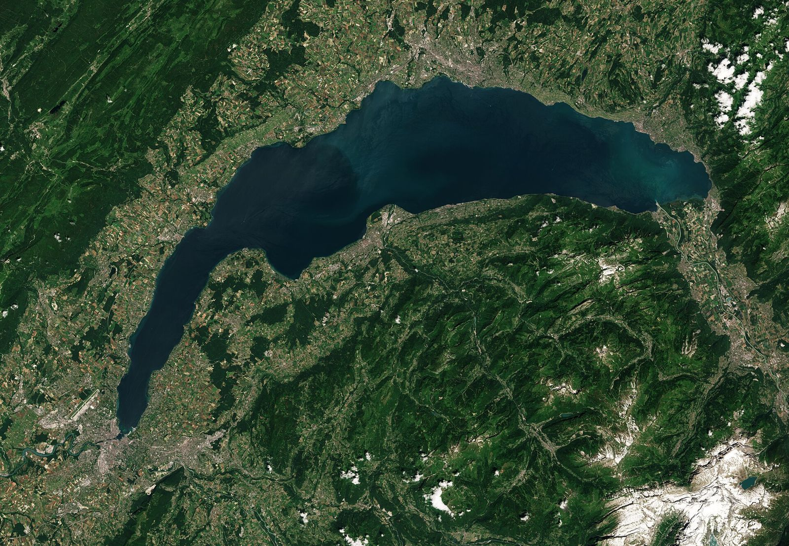

In breve
Il mio lago mostra la temperatura dell’acqua a 70 cm sotto la superficie, davanti a ciascuna delle 65 spiagge, aggiornata ogni tre ore dal modello Alplakes dell’Eawag. Può differire di diversi gradi da una spiaggia all’altra nello stesso giorno, e crollare bruscamente quando un vento forte fa risalire l’acqua fredda del fondo: è l’«upwelling».
Come viene calcolata la temperatura del Lemano?
I numeri vengono da Alplakes, la piattaforma dell’Eawag (l’istituto di ricerca sull’acqua del Politecnico federale). Combina modelli numerici dei laghi e dati satellitari per calcolare la temperatura dell’acqua a diverse profondità, con previsioni su più giorni. L’Eawag indica, per i grandi laghi, un errore di circa 1 °C in superficie.
Il mio lago legge il valore del modello davanti a ogni spiaggia, a 70 cm di profondità, ogni tre ore. I dati sono pubblicati con licenza CC BY 4.0.
Perché 70 cm sotto la superficie?
Perché è più o meno l’acqua in cui si nuota. La primissima pellicola di superficie si scalda o si raffredda molto in fretta con il sole e l’aria; un po’ più in basso il valore è più stabile e più vicino a ciò che si sente entrando.
Perché l’acqua non ha la stessa temperatura ovunque?
Il Lemano è grande e profondo, e il vento vi sposta l’acqua di superficie. Quando un vento forte soffia a lungo nella stessa direzione, spinge l’acqua calda di superficie; per compensare, acqua fredda profonda risale vicino ad alcune rive. Gli scienziati chiamano questo fenomeno upwelling.
- Nel giugno 2025 l’acqua è passata da 19 a 11 °C in pochi giorni vicino a Ginevra, sotto un vento forte e persistente da sud-ovest; Alplakes l’aveva previsto con diversi giorni di anticipo (Eawag).
- Il record noto: a fine giugno 2017 l’acqua dei Bains des Pâquis è passata da 23 a soli 8 °C in due giorni (Eawag).
Risultato: lo stesso giorno, due spiagge possono mostrare diversi gradi di differenza. Lo scarto del momento è calcolato qui sotto.
Dove vedere la temperatura del Lemano in diretta?
Nell’app Il mio lago, gratuita e senza account, con vento, bise e un verdetto per ogni attività. L’elenco delle spiagge offre anche una pagina per ogni spiaggia, da Ginevra a Saint-Gingolph e da Évian a Chens-sur-Léman.
L’acqua del lago in questo momento
La temperatura dell’acqua di ogni spiaggia è nell’app Il mio lago, aggiornata ogni tre ore.